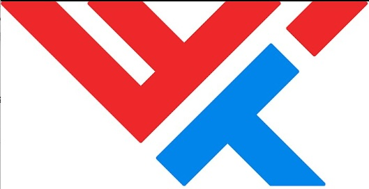
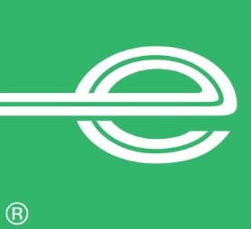

SKILLS
- Team Leadership
- Enterprise Architecture
- Software Engineering
- Software Architecture
- Business Strategy
- Change Management
EDUCATION
-
University of Missouri, St. Louis
Bachelor of Science
Electrical Engineering
2000 - 2004 -
Washington University (Joint Program), St. Louis
Electrical Engineering
2002 - 2004
VOLUNTEERING
- Mercer Island High School Water Polo Team, 2023 - present
- Starbucks - SIX, Hackweek, Techtoberfest, 2022 - present
- Launch Code - Lead Instructor 2019 - 2020
- Junior Achievement of Greater St. Louis, 2014 - 2020
AWARDS
- Panera Hackathon Winning Team 2015, 2017, 2019
- Best Nutrition Hack - PickHacks, Rolla
- Team Spirit of Starbucks Award - 2023, Bravo Award - 2024,2025
PUBLIC SPEAKING
- Starbucks SIX and Hackweek - 2022 - Present
- Adobe Summit, How Panera Re-Imagined Digital Ordering - 2020
- PickHacks, Rolla - Workshop on AWS Lambda w/ Alexa - 2019
Shivany Shenoy
Enterprise Architecture Leader @ Starbucks
SUMMARY
Strategic and dynamic thought leader, with a diverse technology background spanning over 22 years across Restaurant, Retail, Supply Chain and Healthcare Industries. Instrumental in building and leading the eCommerce Platform at Panera (Panera 2.0), which received several awards, accolades and mentions in industry-leading omni-channel architecture including Gartner’s L2 in 2018 and 2019 Digital IQ “Gifted” ranking. Principal Enterprise Architect at Starbucks for the past 6 years, leading digital transformation and mission-critical initiatives. Being a technology enthusiast at heart, I love to innovate and stay very involved in solving tough problems and helping the team evolve towards changing business strategy. Recipient of the team Spirit of Starbucks award and Bravo awards.
EXPERIENCE
Principal Enterprise Architect
Starbucks
Seattle, WA
April 2020 - Present
- Led architecture for Starbucks Mobile & Web Applications which bring roughly 17b+ in annual digital sales revenue.
- Initially helped design and guide the next-generation Point of Sale (OWS) platform, show-cased at Investor Day 2022.
- Partnered across digital, marketing, and retail engineering teams to accelerate and modernize systems for personalization, loyalty, and campaign automation.
- Helped migrate legacy MarTech and Content Management systems to the Adobe Experience Cloud.
- Led Architecture, design and initial launch of the Starbucks Alumni Community, a social network for former Starbucks partners.
- Onboarded SAP LeanIX to Uplift Starbucks Enterprise Architecture practice and streamline App Rationalization, with integrations into Service Now & Collibra.
- Co-led the Starbucks Technology Hackathon, each year, most recently Gen AI focused, fostering innovation and mentorship across global teams.
- Led the Architecture and design of a brand new Starbucks Merchandise site utilizing the Shopify platform.
- Partnered with Leadership and Global Cyber Security to push for wider adoption of Gen AI technologies.
- Strategic advisor to VP-level leadership, translating architecture strategy into actionable product and engineering roadmaps.
Senior Manager, eCommerce Architecture
Panera Bread
St. Louis, MO
Aug 2017 -Apr 2020
- Evangelize developer productivity, best practices, solutions.
- Drive Solution Architecture.
- Involved in design, architecture, development of our owned eCommerce Delivery Platform from the ground up including but not limited to: data architecture, service API design, core UI design.
- Involved in organizing our annual Panera Hackathon, subsequent Vendor Participation and social media promotion.
- Core Knowledge of Content Management Systems, eCommerce integration, best practices. Ability to mentor new developers and help bring them up to speed.
- Excelled in leading projects with aggressive deadlines, limited resources and being completely hands on or hands off with respect to any aspect of a given project.
Senior Manager, Sr Tech Lead
Panera Bread
St. Louis, MO
Mar 2015 -Aug 2017
- Manage a group of talented folks, taking Panera's eCommerce platform to the next level.
- Drive transaction growth, improve customer experience and overall performance.
- Reduce maintenance and support costs of our Online Retail eCommerce Channel.
- Evolve our overall development, coding best practices, testing standards and strategy to accommodate the high degree of growth we have at Panera.
- Nurture, guide and mentor developers to reach the next level.
- Reach across teams to solve problems and succeed in meeting business goals.
- Continually evaluate newer technologies to improve our software development process and workflows.
Tech Lead
Panera Bread
St. Louis, MO
Jun 2013 -Mar 2015
- At the inception of Panera 2.0, managed a large group of associates to quickly deliver products from inception to scale in production.
- Working closely with the development team and product owner to ensure the team members have appropriate product, technical specifications and direction in order to deliver successfully and remain on target to meet deadlines.
- Demonstrate leadership and collaborate cross-functionally in order to solve problems and define the overall product vision.
- Working with other leads, business analysts, architects and developers to gain a deeper understanding of best practices and in elevating the craft of product development.
- Mentoring team members. Enabling them to challenge themselves with new tools, languages, and problem-solving objectives.

Sr. Developer
World Wide Technology
St. Louis, MO
Jun 2011 - Jun 2013
- Function as a lead resource on medium to large-scale projects.
- Drive requirements, development, technical design and documentation for custom applications.
- Ensure key project deliverables are completed on-time and meet or exceed customer expectations.
- Mentor and assist other developers, including both Jr. and Sr. developers on the project team.
- Provide on-call support and resolve all issues in a timely manner.
- Work with team members to build prototypes and prove out different approaches, technologies or frameworks in the web and mobile space.

Sr. Software Engineer
Enterprise Rent-a-Car
St. Louis, MO
Jul 2007 - Jun 2011
- Analyze, Design, Develop, Test, Maintain and Document software applications.
- Work with counterparts to assess business requirements and translate into code.
- Mentor less experienced developers.
- Provide production support, analyze and resolve problems as they relate to our systems.
- Be available for after-hours activities such as deployments and implementations that may occur on evenings and weekends.
Application Developer
Wells Fargo
St. Louis, MO
Aug 2005 -Jul 2007
- Worked within a Development Team responsible for building, deploying and maintaining custom Web Applications running on the proprietary Financial Advisor Workstation.
- Led Software Architecture for new Web Applications utilizing latest technologies.
- Involved in Production Support, troubleshooting issues during on-call.
Software Engineer
Cerner Corporation
Kansas City, MO
Aug 2004-2005
- Mastered core concepts of Java, J2EE, RDBMS and Business Objects.
- Built Java-based multi-tier web applications for managing clinical trials and patient lists for clinics and hospitals that had adopted the Cerner Technology Platform.